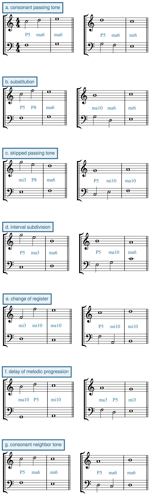

Open Music Theory：繁體中文版
第二類對位法
重點整理
在第二類對位法中，對位聲部以二分音符進行，搭配全音符的定旋律。這個 2:1 的節奏比例帶來兩項新的基本音樂課題：一項關於拍節，即強拍與弱拍的區分；另一項關於和聲，即以經過音引入不協和音程。和聲上的不協和增加了音樂織度的變化，卻也帶來張力，必須以協和音程平衡，才能維持音響融合；進入與離開不協和音時，也須細心處理，以保持流暢。
以下收錄《Gradus ad Parnassum》第一部分的全部第二類對位法範例，並和先前一樣，標出對位聲部與定旋律之間的音程。《Gradus ad Parnassum》完整的練習、解答與註解，請見〈《Gradus ad Parnassum》練習〉。
範例 1。《Gradus ad Parnassum》中的全部第二類對位法練習。
查看英文原文
Key Takeaways
The second species of species counterpoint sees the counterpoint line move twice as fast as the cantus firmus. This introduces the ideas of strong versus weak beats.
Strong beats are always consonant. Weak beats may be consonant or dissonant. Dissonance may occur on weak beats may arise through passing motion. Consonant weak beats connect two consonant strong beats to create a succession of 3 consonances. These can be of many types:
- consonant passing tone: two steps in the same direction to outline a third.
- substitution: leap a fourth, then step in the opposite direction.
- skipped passing tone: a third and a step in the same direction to outline a fourth.
- interval subdivision: two leaps in the same direction to divide a larger melodic interval, for example, with two thirds to make a fifth.
- change of register: a large, consonant leap (perfect fifth, sixth, or octave) from strong beat to weak beat, followed by a step in the opposite direction.
- delay of melodic progression: leap a third, then step in the opposite direction.
- consonant neighbor tone: step in one direction, then step back to the original tone.
In second-species counterpoint, the counterpoint line moves in half notes against a cantus firmus in whole notes. This 2:1 rhythmic ratio leads to two new “fundamental musical problems”—one metric and one harmonic: the differentiation between strong beats and weak beats, and the introduction of the passing-tone dissonance. The introduction of harmonic dissonance into second species adds to the variety of the musical texture. However, it brings a tension that must be balanced with consonance to promote tonal fusion, and it requires careful attention in order to maintain smoothness in and out of the dissonance.
Here are the complete examples of second-species counterpoint from Part I of Gradus ad Parnassum, annotated (as before) with the interval that the counterpoint line makes with the cantus firmus. For the complete examples from Gradus ad Parnassum as exercises, solutions, and annotations, see Gradus ad Parnassum Exercises.
Example 1. All second-species exercises from Gradus ad Parnassum.
與第一類一樣，對位聲部應容易歌唱、輪廓良好，具有單一高潮，並以級進為主，穿插一些小跳，偶爾以大跳增加變化。不過，第一類對位法的音符很少，為了兼顧練習其他方面的流暢，旋律常需要小跳。到了第二類，音符數增加，又有使用不協和音程的自由，便更容易在不引發其他音樂問題的情況下採用級進。因此，第二類的級進比例比第一類更高。若非跳進不可，應利用拍節安排來降低跳進的顯著程度：盡可能在小節內從強拍跳到弱拍，避免跨小節線從弱拍跳到強拍。此外，第二類旋律的音符較多，通常還應有一、兩個次要高潮：這些音低於全曲的最高點，作為局部片段的高潮。這能讓旋律有連貫的形狀，而非漫無目的地遊走，從而加強旋律的完整性。
查看英文原文
The Counterpoint Line
As in first species, the counterpoint line should be singable and have a good shape, with a single climax and primarily stepwise motion (with some small leaps and an occasional large leap for variety). However, because a first-species counterpoint had so few notes, in order to maintain smoothness in other aspects of the exercise, the melody frequently employed small leaps. In second species, the increase in notes and the added freedom involving the use of dissonance makes it easier to move by step without causing other musical problems. Thus, a second-species counterpoint is even more dominated by stepwise motion than in first species. If the counterpoint must leap, take advantage of the metrical arrangement to diminish the attention drawn to the leap: leap from strong beat to weak beat (within the bar) rather than from weak beat to strong beat (across the bar line) when possible. Also, because there are more notes in a second-species line, there should usually be one or two secondary climaxes—notes lower than the overall climax that serve as “local” climaxes for portions of the line. This will help the integrity of the line by ensuring that it has a coherent shape and does not simply wander around.
第二類對位法的起始
與第一類一樣，若第二類對位聲部位於定旋律上方，應以 do [latex](\hat1)[/latex] 或 sol [latex](\hat5)[/latex] 開始；若位於定旋律下方，則以 do [latex](\hat1)[/latex] 開始。
第二類對位聲部的第一小節可以寫兩個二分音符，也可以先寫二分休止符，再接二分音符。休止符起頭能更快建立節奏輪廓，讓聽者更容易辨識，因此通常較好，也比較容易寫作。不論選哪種節奏，對位聲部的第一個實際音高都應遵守上述起始音程規則。
查看英文原文
Beginning a second-species counterpoint
As in first species, begin a second-species counterpoint above the cantus firmus with do [latex](\hat1)[/latex] or sol [latex](\hat5)[/latex]. Begin a second-species counterpoint below the cantus firmus with do [latex](\hat1)[/latex].
A second-species line can begin with two half notes in the first bar, or a half rest followed by a half note. Beginning with a half rest establishes the rhythmic profile more readily, making it easier for the listener to parse, so it is often preferable. It is also easier to compose. Regardless of rhythm, the first pitch in the counterpoint should follow the intervallic rules above.
第二類對位法的結束
與第一類一樣，應以 clausula vera 終止式結束：對位聲部的最後一個音為 do [latex](\hat1)[/latex]。它的倒數第二個音，若對應的定旋律是 re [latex](\hat2)[/latex]，便應為 ti [latex](\hat7)[/latex]；若定旋律是 ti [latex](\hat7)[/latex]，便應為 re [latex](\hat2)[/latex]。
對位聲部的倒數第二小節可以使用一個全音符，讓最後兩小節與第一類相同；也可以使用兩個二分音符。因此，clausula vera 終止式可以從倒數第二小節的強拍或弱拍開始。
查看英文原文
Ending a second-species counterpoint
As in first species, you should end with a clausula vera: the final pitch of the counterpoint should be do [latex](\hat1)[/latex]; the penultimate note of the counterpoint should be ti [latex](\hat7)[/latex] if the cantus is re [latex](\hat2)[/latex], and re [latex](\hat2)[/latex] if the cantus is ti [latex](\hat7)[/latex].
The penultimate bar of the counterpoint can either be a whole note (making the last two bars identical to first species) or two half notes. This allows you to begin your clausula vera on either the strong beat or the weak beat of the penultimate measure.
在音樂織度中加入不協和音程，會帶來新的音樂課題。類種對位法的教學理念是，每進入新的一類，只增加少數難題，因此第二類只在非常有限的範圍內引入不協和音程。
跨越小節線，也就是從弱拍到強拍時，兩聲部會同時移動，與第一類的聲部進行相同，因此應遵守第一類對位法的原則。例如，若弱拍是完全五度，下一個小節第一拍就不能也是完全五度。
同樣地，從一個小節第一拍到下一個小節第一拍的進行，也須遵循前一章的第一類對位法原則，例如：
- 不要讓連續兩小節以同類完全音程開始。
- 相鄰兩小節第一拍之間，不應勾勒出不協和的旋律音程。例外是：若對位聲部從強拍到弱拍跳進八度，接著應反方向級進，因此與前一個小節第一拍構成七度。這種情況可以接受，因為它來自流暢的聲部進行。
- 同一類不完全協和音程，最多只能連續出現在三個小節的開頭。
相鄰兩個小節第一拍之間出現隱伏五度／八度，也稱直接五度／八度，是可以的，因為其效果較弱，又有對位聲部中間插入的音符加以減輕。
查看英文原文
Strong Beats
The inclusion of dissonance in a musical texture creates new musical problems that need to be addressed. Because the philosophy of species counterpoint is to present only a small number of new musical difficulties with each successive species, second-species counterpoint introduces dissonance in a very limited way.
Strong beats (downbeats) in second species are always consonant. As in first species, prefer imperfect consonances (thirds and sixths) to perfect consonances (fifths and octaves), and avoid unisons.
Because motion across bar lines (from weak beat to strong beat) involves the same kind of voice motion as first species (two voices moving simultaneously), follow the same principles as first-species counterpoint. For instance, if a weak beat is a perfect fifth, the following downbeat cannot also be a perfect fifth.
Likewise, progressions from downbeat to downbeat must follow the principles of first-species counterpoint described in the previous chapter, such as:
- Do not begin two consecutive bars with the same perfect interval.
- Do not outline a dissonant melodic interval between consecutive downbeats. (Exception: if the counterpoint leaps an octave from the strong beat to the weak beat, the leap should be followed by step in the opposite direction, making a seventh with the preceding downbeat. This is okay, since it is the result of smooth voice motion.)
- Do not begin more than three bars in a row with the same imperfect consonance.
Hidden or direct fifths/octaves between successive downbeats are fine, as the effect is weak, and diminished by the intervening note in the counterpoint.
弱拍可以出現和聲上的不協和音程，因此在弱拍混合使用協和與不協和音程，最能增加變化。
第一類的同度會削弱各聲部的獨立性，因此造成問題。不過，若同度出現在第二類的弱拍，而且前後的聲部進行流暢，兩條旋律的節奏差異就足以維持獨立性。因此，為了寫出良好的聲部配合，必要時容許在弱拍使用同度。
這些原則有助於安排第二類對位聲部的弱拍音。一個實用的方法是，先決定一個小節第一拍的音，再決定下一個小節第一拍的音，最後從下列型態中選一種，妥善填入兩者之間的弱拍。
本頁下方的示範影片會舉例說明這些原則中的大部分。
查看英文原文
Weak Beats
Since harmonic dissonances can appear on weak beats, a mixture of consonant and dissonant intervals on weak beats is the best way to promote variety.
Unisons were problematic in first species because they diminished the independence of the lines. However, when they occur on the weak beats of second species and are the result of otherwise smooth voice leading, the rhythmic difference in the two lines is sufficient to maintain that independence. Thus, unisons are permitted on weak beats when necessary to make good counterpoint between the lines.
Any weak-beat dissonance must follow the pattern of the dissonant passing tone, explained below. Also explained below are a number of standard patterns for consonant weak beats. Chances are high that if your weak beats do not fit into one of the following patterns, there is a problem with the counterpoint, so use them as a guide both for composing the counterpoint and for evaluating it.
These principles should help guide your use of weak-beat notes in a second-species counterpoint line. A good general practice is to start with a downbeat note, then choose the following downbeat note, and finally choose a pattern below that will allow you to fill in the space between downbeats well.
Most of these principles are used as examples in the demonstration video at the bottom of the page.
第二類中，弱拍上的所有不協和音都是不協和經過音。之所以這樣稱呼，是因為對位聲部以級進從一個協和的小節第一拍通往下一個協和的小節第一拍。此時，對位聲部兩個小節第一拍之間的旋律音程必為三度，經過音位於中間，以連續級進填滿這個三度。
第二類的所有不協和音都是經過音，所以不能跳進到達或離開不協和音，不能在不協和音上改變旋律方向，也不能在小節第一拍寫不協和音。
查看英文原文
Dissonant passing tones (weak beats only)
All dissonant weak beats in second species are dissonant passing tones, so called because the counterpoint line passes from one consonant downbeat to another consonant downbeat by stepwise motion. The melodic interval from downbeat to downbeat in the counterpoint will always be a third, and the passing tone will come in the middle in order to fill that third with passing motion.
Since all dissonances in second species are passing tones, you will not leap into or out of a dissonant tone, change directions on a dissonant tone, nor write a dissonance on a downbeat.
{kind=link}

- 圖中 a. consonant passing tone＝協和經過音；
- b. substitution＝替代音；
- c. skipped passing tone＝跳進經過音；
- d. interval subdivision＝音程分割；
- e. change of register＝音域轉換；
- f. delay of melodic progression＝旋律進行的延遲；
- g. consonant neighbor tone＝協和鄰音。
- 音程標記 P＝完全、ma＝大、mi＝小；
- 後接數字為度數。
- 協和經過音（consonant passing tone）在相鄰兩個小節第一拍之間勾勒出三度。型態與不協和經過音相同，但三個音——第一拍、經過音、下一小節第一拍——都與當下的定旋律協和。協和經過音必定在定旋律上方或下方構成六度或完全五度。
- 替代音（substitution）同樣在相鄰兩個小節第一拍之間勾勒出三度，但不以級進填入中間，而是先跳進四度，再反方向級進。若旋律需要多一次跳進或轉向以增加變化，就可以用它替代經過音，名稱也由此而來。與協和經過音一樣，對位聲部的三個音都必須與當下的定旋律協和。
- 跳進經過音（skipped passing tone）在相鄰兩個小節第一拍之間勾勒出四度，弱拍音將這個四度分為一個三度與一個二度。同樣地，三個位置——第一拍、跳進經過音、下一小節第一拍——都與當下的定旋律構成協和音程。
- 音程分割（interval subdivision）在相鄰兩個小節第一拍之間勾勒出五度或六度，將這個協和的大旋律音程分成兩次較小的協和跳進。五度分為兩個三度；六度則分為三度加四度，或四度加三度。不僅三個旋律音程——相鄰音符之間的兩個音程，以及兩個小節第一拍之間的音程——都必須協和，對位聲部的每個音也都必須與當下的定旋律協和。
- 音域轉換（change of register）是從強拍到弱拍作協和的大跳，例如完全五度、六度或八度，再反方向級進。它可以在長時間級進後增加旋律變化，避免平行或其他問題，也可以讓對位聲部避開定旋律，以維持獨立性。這種型態不宜常用，而且每個音仍須與當下的定旋律協和。
- 旋律進行的延遲（delay of melodic progression）在相鄰兩個小節第一拍之間勾勒出二度。先從強拍到弱拍跳進三度，再反方向級進到下一個小節第一拍。稱為「延遲」，是因為它裝飾了原本較慢的第一類進行，也就是兩個小節第一拍之間的一次級進。
- 協和鄰音（consonant neighbor tone）是對位聲部從小節第一拍級進到弱拍，再於下一個小節第一拍回到原音。若第一個小節第一拍與定旋律構成五度，協和鄰音便構成六度；反之亦然。
查看英文原文
Consonant weak beats
Unlike dissonant weak beats (of which there is only one type), there are several types of consonant weak beats available (Example 2):[1]
-
- A consonant passing tone outlines a third from downbeat to downbeat, and it has the same pattern as the dissonant passing tone, except that all three tones (downbeat, passing tone, downbeat) are consonant with the cantus firmus. A consonant passing tone will always be a sixth or perfect fifth above/below the cantus.
- A substitution also outlines a third from downbeat to downbeat. However, instead of filling it in with stepwise motion, the counterpoint leaps a fourth and then steps in the opposite direction. It is called a substitution because it can substitute for a passing tone in a line that needs an extra leap or change of direction to provide variety. Like the consonant passing tone, all three notes in the counterpoint must be consonant with the cantus.
- A skipped passing tone outlines a fourth from downbeat to downbeat. The weak-beat note divides that fourth into a third and a step. Again, all three intervals (downbeat, skipped passing tone, downbeat) are consonant with the cantus.
- An interval subdivision outlines a fifth or sixth between successive downbeats. The large, consonant melodic interval between downbeats is divided into two smaller consonant leaps. A melodic fifth between downbeats would be divided into two thirds. A melodic sixth between downbeats would be divided into a third and a fourth, or a fourth and a third. Not only must all three melodic intervals be consonant (both note-to-note intervals and the downbeat-to-downbeat interval), but each note in the counterpoint must be consonant with the cantus.
- A change of register occurs when a large, consonant leap (perfect fifth, sixth, or octave) from strong beat to weak beat is followed by a step in the opposite direction. It is used to achieve melodic variety after a long stretch of stepwise motion, to avoid parallels or other problems, or to get out of the way of the cantus to maintain independence. It should be used infrequently. And as always, each note must be consonant with the cantus.
- A delay of melodic progression outlines a step from downbeat to downbeat. It involves a leap of a third from strong beat to weak beat, followed by a step in the opposite direction into the following downbeat. It is called a “delay” because it is used to embellish what otherwise is a slower first-species progression (motion by step from downbeat to downbeat).
- A consonant neighbor tone occurs when the counterpoint moves by step from downbeat to weak beat, and then returns to the original pitch on the following downbeat. If the first downbeat makes a fifth with the cantus, the consonant neighbor will make a sixth, and vice versa.
範例 3 是 Kris Shaffer 示範如何寫作第二類對位法的影片。除了具體演示上述規則與原則，也補充了寫作過程的資訊。
範例 3。第二類對位法寫作的教學影片。
- 第二類對位法 A（PDF、MuseScore 檔 .mscz）：找出一道第二類對位法範例中的錯誤，並自行寫作一道練習。
- 第二類對位法 B（PDF、MuseScore 檔 .mscz）：找出一道第二類對位法範例中的錯誤，並自行寫作一道練習。
- Fux 的完整練習集，請見〈《Gradus ad Parnassum》〉一章。
媒體來源與授權
- 〈consonant〉© Megan Lavengood，採用 CC BY-NC-SA 姓名標示—非商業性—相同方式分享授權。
- 此處的術語有些是通用術語，其餘採自 Salzer 與 Schachter 的《Counterpoint in Composition》。↵
查看英文原文
Demonstration
Example 3 is a video by Kris Shaffer illustrating the process of composing a second-species counterpoint. This video provides new information about the compositional process, as well as concrete examples of the above rules and principles.
Example 3. Video lesson on composing a second-species counterpoint.
- Second-Species Counterpoint A (.pdf, .mscz). Asks students to do error detection on one second-species example and compose one of their own.
- Second-Species Counterpoint B (.pdf, .mscz). Asks students to do error detection on one second-species example and compose one of their own.
- For the complete set of Fux exercises, see the Gradus ad Parnassum chapter.
Media Attributions
- consonant © Megan Lavengood is licensed under a CC BY-NC-SA (Attribution NonCommercial ShareAlike) license
- The terms used here are either standard or taken from Salzer & Schachter’s Counterpoint in Composition. ↵